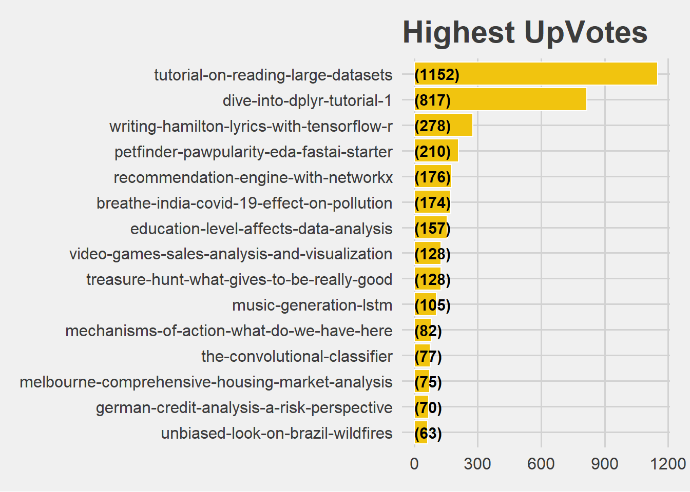
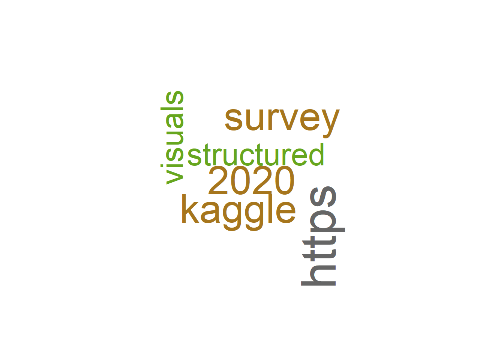
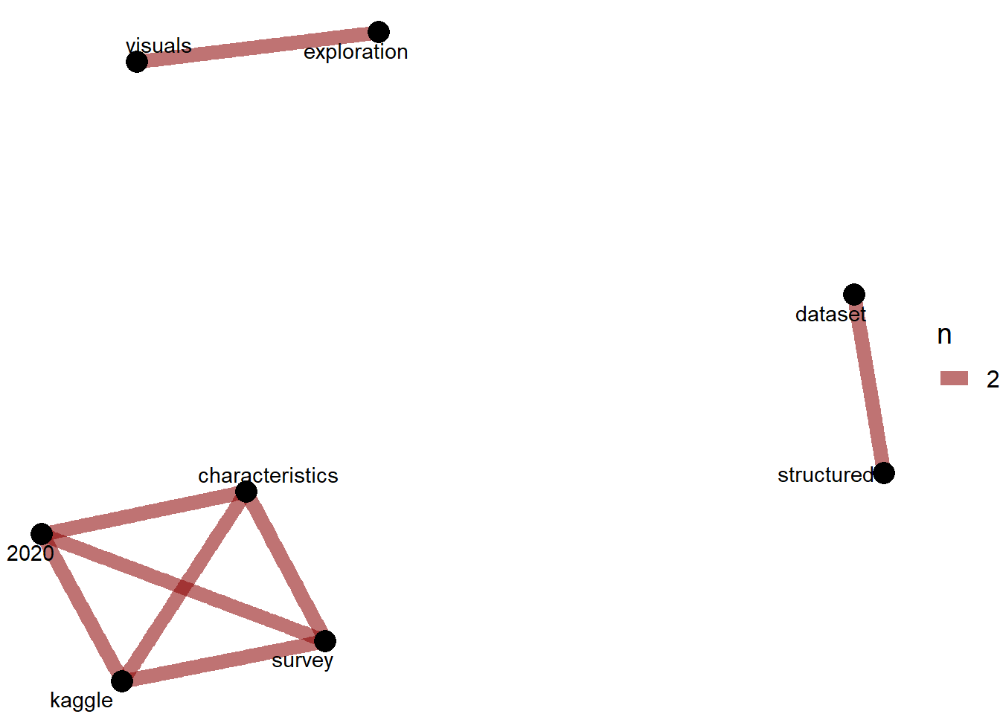

Chapter 14 Who got Highest Votes after Hidden Gem Declaration
The notebooks which got the highest votes after the Hidden Gem declaration are shown below
Tutorial on reading large datasets, Dive into dplyr (tutorial #1), Writing Hamilton Lyrics with Tensorflow/R, Petfinder Pawpularity EDA & fastai starter , Recommendation engine with networkx got the highest votes after the Hidden Gem declaration
Kaggle, 2020, Structured Data are the most popular words for the kernels which got the highest upvotes after it was declared as a Hidden Gem.
kernels_gems_versions = left_join(kernels_gems,kernel_versions,by = c("KernelId" = "ScriptId"))
kernels_gems_versions = kernels_gems_versions %>%
rename(KernelVersionId = Id)
kernel_gems_votes = left_join(kernels_gems_versions,kernel_votes)
kernel_gems_votes$VoteDate = as.Date(kernel_gems_votes$VoteDate,format = "%m/%d/%Y")
kernel_gems_votes$date = as.Date(kernel_gems_votes$date,format = "%m/%d/%Y")
kernel_gems_votes %>%
filter(VoteDate > date) %>%
group_by(CurrentUrlSlug) %>%
summarise(Count = n()) %>%
arrange(desc(Count)) %>%
head(15) %>%
ungroup() %>%
mutate(CurrentUrlSlug = reorder(CurrentUrlSlug,Count)) %>%
ggplot(aes(x = CurrentUrlSlug,y = Count)) +
geom_bar(stat='identity',colour="white", fill = fillColor2) +
geom_text(aes(x = CurrentUrlSlug, y = 1, label = paste0("(",Count,")",sep="")),
hjust=0, vjust=.5, size = 4, colour = 'black',
fontface = 'bold') +
labs(x = 'Notebook',
y = 'Count',
title = 'Highest UpVotes') +
coord_flip() +
theme_fivethirtyeight(base_size = 15)
s =
kernel_gems_votes %>%
filter(VoteDate > date) %>%
group_by(CurrentUrlSlug) %>%
summarise(Count = n())
s = left_join(gems,s)
a = s %>%
arrange(desc(Count)) %>%
head(15) %>%
select(notebook,title,review)
gem_review <- a %>%
select(notebook,review) %>%
unnest_tokens(word, review) %>%
anti_join(stop_words)
gem_review %>%
count(word,sort = TRUE) %>%
ungroup() %>%
head(30) %>%
with(wordcloud(word, n, max.words = 30,colors=brewer.pal(8, "Dark2")))
review_word_pairs <- gem_review %>%
pairwise_count(word, notebook, sort = TRUE, upper = FALSE) %>%
filter( item1 != "www.kaggle.com") %>%
filter( item2 != "www.kaggle.com") %>%
filter( item1 != "https")
occur = 2
set.seed(1234)
review_word_pairs %>%
filter(n >= occur) %>%
graph_from_data_frame() %>%
ggraph(layout = "fr") +
geom_edge_link(aes(edge_alpha = n, edge_width = n), edge_colour = "darkred") +
geom_node_point(size = 5) +
geom_node_text(aes(label = name), repel = TRUE,
point.padding = unit(0.2, "lines")) +
theme_void(base_size = 15)
| Highest Votes after the Hidden Gem Declaration | ||
|---|---|---|
| notebook | title | review |
| https://www.kaggle.com/rohanrao/tutorial-on-reading-large-datasets | Tutorial on reading large datasets | An impressively clean and accessible primer on Python tools to read, and formats to store, large datasets. Brief and to the point; featuring Pandas, Dask, Datable, and Rapids cudf. |
| https://www.kaggle.com/jessemostipak/dive-into-dplyr-tutorial-1 | Dive into dplyr (tutorial #1) | A well-structured guide to R dplyr functionality showcased on the [palmer penguin dataset](https://www.kaggle.com/parulpandey/palmer-archipelago-antarctica-penguin-data). Does a great job in elucidating the tidyverse approach and philosophy. |
| https://www.kaggle.com/anasofiauzsoy/writing-hamilton-lyrics-with-tensorflow-r | Writing Hamilton Lyrics with Tensorflow/R | History has its eyes on this R Keras tutorial showcasing the ten NLP commandments to predict the non-stop lyrics of the musical Hamilton. And we don't even have to wait for it. |
| https://www.kaggle.com/tanlikesmath/petfinder-pawpularity-eda-fastai-starter | Petfinder Pawpularity EDA & fastai starter | A clean and concise FastAI starting point for the recently launched [Pawpularity competition](https://www.kaggle.com/c/petfinder-pawpularity-score); complete with the popular Swin Transformer model in a classification approach. |
| https://www.kaggle.com/yclaudel/recommendation-engine-with-networkx | Recommendation engine with networkx | Step-by-step guide to building a Netflix recommendation engine; resulting in insightful and visually pleasing output graphs. |
| https://www.kaggle.com/parulpandey/breathe-india-covid-19-effect-on-pollution | Breathe India: COVID-19 effect on Pollution | A detailed work studying the interaction between the big topics of COVID-19 and air pollution in past and recent data from India. |
| https://www.kaggle.com/michau96/education-level-affects-data-analysis | Education level affects data analysis? | This work provides an elegant, visual R/tidyverse investigation of the impact of formal education levels on the characteristics of our community based on the [2020 Kaggle Survey](https://www.kaggle.com/c/kaggle-survey-2020). |
| https://www.kaggle.com/snanilim/video-games-sales-analysis-and-visualization | Video games sales analysis and visualization | Fun and engaging narration provides the scaffolding for gaming insights on genres and regional levels. |
| https://www.kaggle.com/andradaolteanu/treasure-hunt-what-gives-to-be-really-good | Treasure Hunt - what gives to be REALLY good? | A delightfully creative exploration of the characteristics of successful DS/ML practitioners in the [2020 Kaggle Survey](https://www.kaggle.com/c/kaggle-survey-2020). The fun visuals are great and the treasure map is a stroke of genius. |
| https://www.kaggle.com/karnikakapoor/music-generation-lstm | Music Generation: LSTM | Exceptionally well structured and narrated, this musical experimentation learns from Chopin to write its own piano melodies using LSTMs. Note the stylish gifs and playable audio files. |
| https://www.kaggle.com/datafan07/mechanisms-of-action-what-do-we-have-here | Mechanisms of Action: What Do We Have Here? | A comprehensive and well-structured EDA that provides a big-picture overview of the dataset, while also highlighting and commenting on important individual features. |
| https://www.kaggle.com/ryanholbrook/the-convolutional-classifier | The Convolutional Classifier | The opening Notebook in Kaggle's new [Computer Vision course](https://www.kaggle.com/learn/computer-vision) starts the lessons with hands-on transfer learning on CNNs and Tensorflow/Keras. Also check out the rest of the course. |
| https://www.kaggle.com/janiobachmann/melbourne-comprehensive-housing-market-analysis | Melbourne || Comprehensive Housing Market Analysis | This EDA on the Melbourne housing market presents a number of interesting dataviz approaches via plotly. Also note the consistent use of explanations that interpret the visuals. |
| https://www.kaggle.com/janiobachmann/german-credit-analysis-a-risk-perspective | German Credit Analysis || A Risk Perspective | This work presents a thorough exploration of risky business in Germany. It deserves much credit for its well-organised structure and expertly designed visuals. |
| https://www.kaggle.com/andradaolteanu/unbiased-look-on-brazil-wildfires | Unbiased Look on Brazil Wildfires | A well-focused analysis on a globally important topic. Enriched by vivid maps, context info, and narration. |